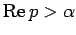
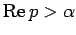
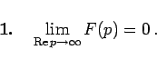
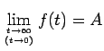

Inhalt Index DeskTop Bronstein

 Integraltransformationen Laplace-Transformation Eigenschaften der Laplace-Transformation Laplace-Transformierte, Original- und Bildbereich
Integraltransformationen Laplace-Transformation Eigenschaften der Laplace-Transformation Laplace-Transformierte, Original- und Bildbereich


Das LAPLACE-Integral  konvergiert in der rechten Halbebene  (s. Abbildung).
konvergiert in der rechten Halbebene  (s. Abbildung).
Die Bildfunktion F(p) ist dann dort eine analytische Funktion mit den Eigenschaften
|  | (15.7a) |
Jede Bildfunktion muß diese notwendige Bedingung erfüllen.
falls die Originalfunktion f(t) einen endlichen Grenzwert  besitzt.